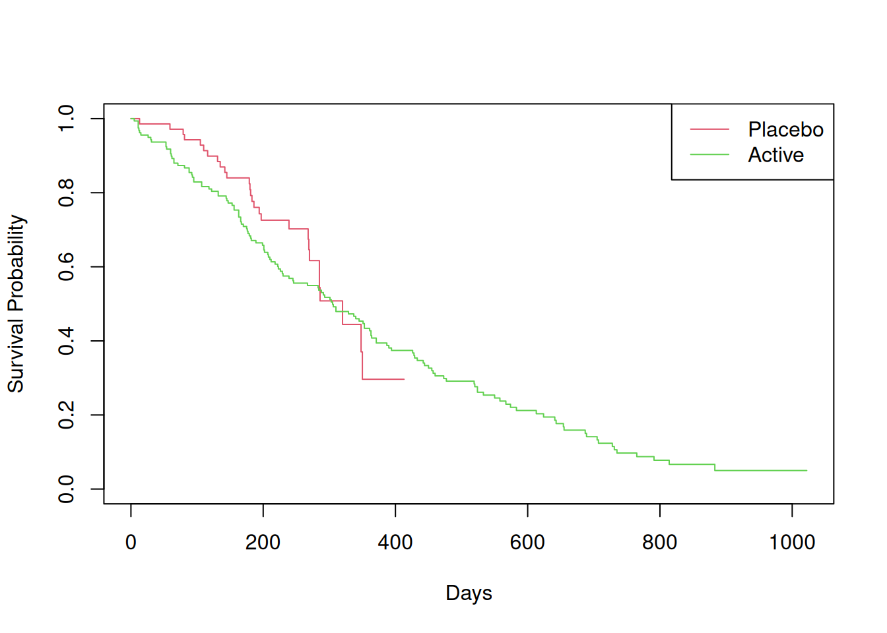
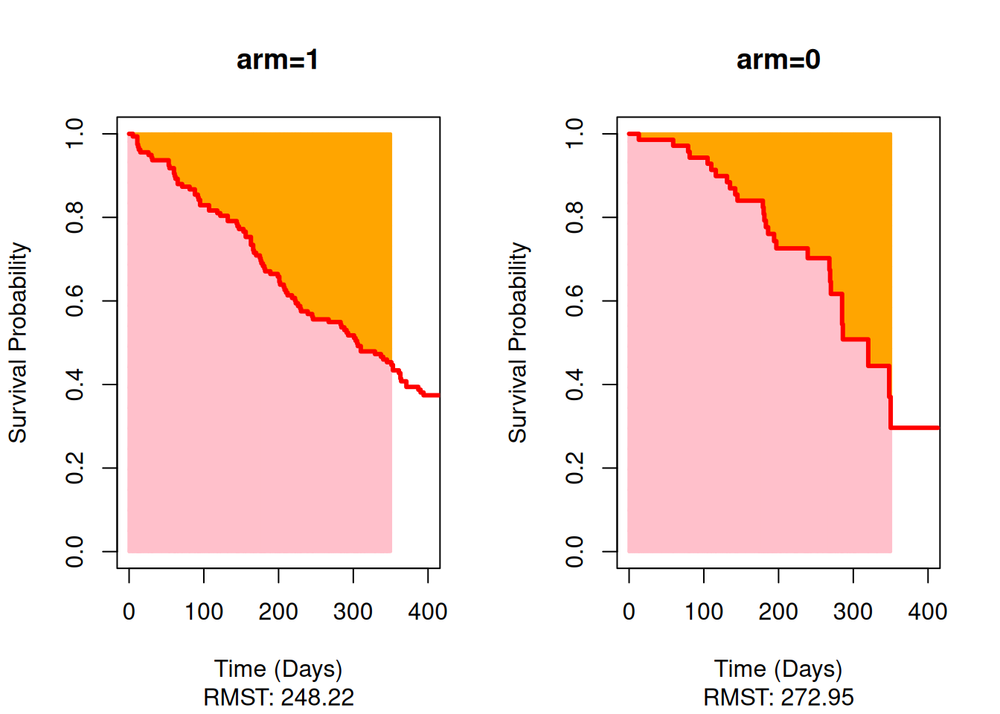

Under the situation where your time to event outcome has non-proportional hazards over time, the commonly used Cox proportional hazards regression analysis and the log-rank test can be invalid - especially when the survival curves cross. One alternative is to analyse the restricted mean survival time (RMST), which is the average time until an event of interest occurs within a defined period.
The RMST also has a very intuitive interpretation in clinical contexts. However, the time frame over which to calculate the average needs to be chosen carefully. It runs from zero until a selected endpoint time called tau. If the data is not mature enough, the result may be unreliable. In addition, one could accuse analysts of selecting a tau which returns the ‘most desirable’ result!
In R, there are three main ways to analyse the RMST. For analyses which include covariates, the inverse probability censoring weighting (IPCW) approach or the pseudo-value approach may be used, as described in Methods 1 and 2 below. Alternatively, the area under the curve (AUC) approach in Method 3 is suitable for unadjusted analyses without covariates.
R packages used
R has many packages for performing and plotting survival analyses - a list can be found on CRAN. The packages used here for RMST analyses are survRM2 (manual) and survival (manual) with geepack (manual).
Common mistakes in RMST analyses in R
Issue 1: Packages have their own ways to represent the event indicator, groups and covariates, so it is important to be aware of how these should be passed from the data. In the survival package, for example, event indicator information can be coded numerically (0 for censored, 1 for event; alternatively, 1 for censored, 2 for event), logically (FALSE for censored, TRUE for event) or as a factor (level 1 for censored, level 2 for event). Always perform counts of events and censored observations to ensure the coding is the correct way around.
Issue 2: The selection of tau in any RMST analysis is critical, as it defines the period over which the average event time is calculated. Typically, tau is based on the minimum time of the last observed event among treatment groups. If you don’t supply a tau when using the survRM2 package, it will provide one for you, which could actually correspond to a censored observation. If events no longer occur in at least one of the groups, then you may not be looking at a time frame of interest. Therefore, it is better practice to determine a suitable tau yourself and explicitly include this in your R code.
Data used
We will use the lung_cancer.csv dataset. Only the variables listed below will be used. We’ll also add a column id to index individual observations (subjects), and we’ll set the reference levels for the variables sex and trt01p.
time - Time (days) to event
status - 1= censored, 2 = event
age - Age (years) of subject
sex - 1 = male, 2 = female
trt01p - Active, Placebo
# Import the data into R using URLadcibc <-read.csv(file ="https://raw.githubusercontent.com/PSIAIMS/CAMIS/refs/heads/main/data/lung_cancer.csv")# Alternatively, import from a download (not run)# adcibc <- read.csv(file.choose()) # Locate lung_cancer.csv download# View the first few rowshead(adcibc)
inst time status age sex ph.ecog ph.karno pat.karno meal.cal wt.loss trt01p
1 3 306 2 74 1 1 90 100 1175 NA Active
2 3 455 2 68 1 0 90 90 1225 15 Active
3 3 1010 1 56 1 0 90 90 NA 15 Active
4 5 210 2 57 1 1 90 60 1150 11 Active
5 1 883 2 60 1 0 100 90 NA 0 Active
6 12 1022 1 74 1 1 50 80 513 0 Active
trt01pn dose_mg dose_id wt_cat wt_catn cnsr
1 1 10 1 <NA> NA 0
2 1 10 1 loss 0 0
3 1 10 1 loss 0 1
4 1 10 1 loss 0 0
5 1 10 1 gain 1 0
6 1 10 1 gain 1 1
# Add column to index observationsadcibc$id <-1:nrow(adcibc)# Set reference level of trt01p to Placeboadcibc$trt01p <-relevel(factor(adcibc$trt01p), ref ="Placebo")# Set reference level of sex to 2 (for female)adcibc$sex <-relevel(factor(adcibc$sex), ref ="2")# Display counts of observations by statusby(data = adcibc$time, INDICES = adcibc$status, FUN = length)
Looking at the counts involving status, there are 63 censored observations under 1 and 165 events under 2.
View the data - Kaplan-Meier curves
It is good practice to first view the shape of the Kaplan-Meier curves. There are several options to do this in R. A straightforward approach is to use the survival package to compute and plot the survival probabilities.
# Obtain survival probabilities for each of the two treatmentskmfit1 <- survival::survfit(formula =Surv(time = time, event = status) ~strata(trt01p), data = adcibc)# Plot the two Kaplan-Meier curvesplot(kmfit1, col =c(2,3), xlab ="Days", ylab ="Survival Probability", lty =1)legend("topright", c("Placebo", "Active"), lty =1, col =c(2,3))

As can be seen from the plot, the treatment curves cross at approximately 300 days, where the Placebo treatment’s survival probability drops below that of the Active treatment. This highlights why it is important to pre-specify the approach to selecting tau. If we selected the period 0 to 6 months (0 to about 180 days) vs. 0 to 18 months (0 to about 550 days), we’d get very different results for the treatment comparison.
Setting tau
The code below calculates tau as the minimum time of the last observed event among the two treatments.
# Get the last observed event time (status = 2) for each treatmentmax_times <-aggregate(time ~ trt01p, FUN = max, data = adcibc[adcibc$status ==2,])# View the resultsprint(max_times)
trt01p time
1 Placebo 350
2 Active 883
# Select the lowest of the max_timestau <-min(max_times$time)# View tauprint(tau)
[1] 350
The tau will limit the time frame over which the area under the curve (AUC) is calculated. As we want to define tau in terms of observed events, we select only those observations where status is 2. This avoids including a period of time where events no longer occur in at least one of the treatment groups.
Method 1: Inverse probability censoring weighting (IPCW) estimation (survRM2)
The rmst2() function in the survRM2 package compares the RMST between two groups. When covariates are also included, estimation is performed using an inverse probability censoring weighting (IPCW) approach based on the framework of Tian, Zhao & Wei (2014). Event times are modelled as a function of the covariates with weights derived from the Kaplan-Meier estimate of the censoring distribution of each group. Weights adjust for right-censoring by giving greater weight to observed events, yielding consistent estimation across groups (Calkins, Canan, Moore, Lesko & Lau, 2018).
Internally, rmst2() fits three IPCW-weighted regression models with sandwich variance estimators corresponding to: the RMST difference, the RMST ratio, and the ratio of the restricted mean time lost (RMTL).
As for passing your data to the function, rmst2() has some very specific requirements! Six arguments are accepted: time, status, arm, covariates,tau and alpha. The first four correspond to the input data and, as outlined below, the data usually needs to be prepared.
time needs to be a numeric vector.
status, i.e., the event indicator, must be a numeric vector with 0 for censored observations and 1 for events.
arm, i.e., the grouping/stratification variable, must be a numeric vector containing 0 and 1 values. We’ll use trt01p here, and code "Placebo" as 0 and "Active" as 1.
covariates must be stored in a matrix or data frame containing only numeric values. For sex, we’ll assign 0 to 2 (female) and 1 to 1 (male). For age, this is just the raw values (age in years).
The following steps prepare the data as described above.
# Create a vector of survival timessurv.times <- adcibc$time# Create a vector of 0s and 1s for 'status' (2 = event, 1 = censored)event.indicator <-ifelse(test = adcibc$status ==2, yes =1, no =0)# Create a vector of 0s and 1s for 'trt01p'trt <-ifelse(test = adcibc$trt01p =="Active", yes =1, no =0)# Create a vector of 0s and 1s for 'sex' (1 = male, 2 = female) and combine with agecovs <-cbind(sexM =ifelse(test = adcibc$sex =="1", yes =1, no =0),age = adcibc$age)
With tau set and the input data ready, let’s perform the RMST comparison of treatments while adjusting for the covariates of sex and age.
# Perform the between-group comparison adjusting for covariatesRMST.comp1 <- survRM2::rmst2(time = surv.times, status = event.indicator, arm = trt,covariates = covs, tau = tau, alpha =0.05)# View outputprint(RMST.comp1, digits =4)
The truncation time: tau = 350 was specified.
Summary of between-group contrast (adjusted for the covariates)
Est. lower .95 upper .95 p
RMST (arm=1)-(arm=0) -9.8835 -39.0192 19.2521 0.5061
RMST (arm=1)/(arm=0) 0.9640 0.8613 1.0789 0.5234
RMTL (arm=1)/(arm=0) 1.1300 0.8147 1.5674 0.4641
Model summary (difference of RMST)
coef se(coef) z p lower .95 upper .95
intercept 380.8065 48.9428 7.7806 0.0000 284.8804 476.7327
arm -9.8835 14.8654 -0.6649 0.5061 -39.0192 19.2521
sexM -54.2552 15.5813 -3.4821 0.0005 -84.7940 -23.7163
age -1.3874 0.7904 -1.7553 0.0792 -2.9366 0.1618
Model summary (ratio of RMST)
coef se(coef) z p exp(coef) lower .95 upper .95
intercept 6.0191 0.1888 31.8783 0.0000 411.2220 284.0245 595.3835
arm -0.0367 0.0575 -0.6381 0.5234 0.9640 0.8613 1.0789
sexM -0.2085 0.0605 -3.4463 0.0006 0.8118 0.7210 0.9140
age -0.0054 0.0031 -1.7348 0.0828 0.9946 0.9886 1.0007
Model summary (ratio of time-lost)
coef se(coef) z p exp(coef) lower .95 upper .95
intercept 3.0771 0.5736 5.3643 0.0000 21.6954 7.0484 66.7795
arm 0.1222 0.1669 0.7322 0.4641 1.1300 0.8147 1.5674
sexM 0.6396 0.2068 3.0930 0.0020 1.8957 1.2640 2.8430
age 0.0151 0.0086 1.7578 0.0788 1.0152 0.9983 1.0325
The first block of the output presents the RMST difference, the RMST ratio and the RMTL ratio relating to arm (the grouping variable) from the three models. The next three blocks provide model summaries.
Usually, the first block is of most interest. The estimated RMST difference between the Active (arm=1) and Placebo (arm=0) treatments is -9.88 days (95% CI: -39.02, 19.25; p = 0.5061). The summary for the corresponding model is located under Model summary (difference of RMST).
Additionally, the RMST difference is expressed as the odds ratio Active/Placebo, whose estimate is 0.9640 (95% CI: 0.8613, 1.0789; p = 0.5234). The summary of this model (performed with a log link) is provided under Model summary (ratio of RMST).
Finally, the odds ratio (Active/Placebo) for the RMTL is provided, with the model summary (on the log scale) given under Model summary (ratio of time-lost).
Overall, it cannot be concluded that there is a difference in the RMST between the Active and Placebo treatments, which is also quite apparent simply by looking over the Kaplan-Meier plot from 0 to 350 days.
The pseudo-observations method (Andersen, Hansen & Klein, 2004) can be performed in R by generating pseudo values from a Kaplan-Meier fit and then by submitting these to regression modelling within a general estimating equations (GEE) framework.
We start by using the survival package to create a Kaplan-Meier fit stored in kmfit2. This is different from kmfit1 created earlier where we included a strata() variable to compute separate Kaplan-Meier curves for each treatment. Here we pool observations on the assumption that the treatments exhibit similar censoring distributions; we’ll still include treatment (trt01p) as a covariate in the pseudo-value regression models.
The pseudo() function generates pseudo values based on kmfit2 as well as tau passed in the times argument. The pseudo values can be inserted directly into the data as a new column called rmst.
# Obtain survival probabilities for the datakmfit2 <- survival::survfit(formula =Surv(time = time, event = status) ~1,id = id, data = adcibc)# Insert into the data a column of RMST pseudo valuesadcibc$rmst <- survival::pseudo(fit = kmfit2, times = tau, type ="rmst",data.frame =TRUE)$pseudo
To model the additive effects of trt01p, sex and age on the RMST (the pseudo values), a linear regression model with robust (sandwich) standard errors can be fitted using geeglm().
# RMST difference using identity linkRMST.comp2 <- geepack::geeglm(rmst ~ trt01p + sex + age, id = id,corstr ="independence", family =gaussian(link ="identity"), data = adcibc)# Model summarysummary(RMST.comp2)
To model the RMST ratio instead, the previous step can be repeated by using the log link.
# RMST ratio using the log linkRMST.comp3 <- geepack::geeglm(rmst ~ trt01p + sex + age, id = id,corstr ="independence", family =gaussian(link ="log"), data = adcibc)# Model summarysummary(RMST.comp3)
As can be seen from the model summary outputs, the conclusions to be drawn are similar to those from using the IPCW method, though the estimates themselves are not identical.
Method 3: Area under the curve method (survRM2)
Often all that is needed is the between-group RMST difference without adjusting for covariates. This is straightforward in survRM2, which, in the absence of covariates, uses a non-parametric method to compare the areas under two Kaplan-Meier curves.
To invoke the AUC method in the rmst2() call, don’t include the covariates argument or set it to NULL:
# Perform the between-group RMST comparisonRMST.comp4 <- survRM2::rmst2(time = surv.times, status = event.indicator, arm = trt,covariates =NULL, tau = tau, alpha =0.05)# View outputprint(RMST.comp4, digits =4)
The truncation time: tau = 350 was specified.
Restricted Mean Survival Time (RMST) by arm
Est. se lower .95 upper .95
RMST (arm=1) 248 9.23 230 266
RMST (arm=0) 273 11.99 249 296
Restricted Mean Time Lost (RMTL) by arm
Est. se lower .95 upper .95
RMTL (arm=1) 102 9.23 83.7 120
RMTL (arm=0) 77 11.99 53.6 101
Between-group contrast
Est. lower .95 upper .95 p
RMST (arm=1)-(arm=0) -24.736 -54.397 4.92 0.1021
RMST (arm=1)/(arm=0) 0.909 0.812 1.02 0.0989
RMTL (arm=1)/(arm=0) 1.321 0.928 1.88 0.1222
Whenever the AUC method is used, the estimated RMST and RMTL of each group is presented in the first block. The third block reports the estimated RMST difference between the Active (arm=1) and Placebo (arm=0) treatments, which is -24.74 days (95% CI: -52.40, 4.92; p = 0.1021).
survRM2 also has the plot() function to visualise the areas under the Kaplan-Meier curves.
# Display the AUC for the Kaplan-Meier curves up until the selected tauplot(x = RMST.comp4, xlab ="Time (Days)", ylab ="Survival Probability",xlim =c(0, 400), ylim =c(0, 1))

The AUC is shaded pink, corresponding to the RMST, while the area above the curve, shaded orange, corresponds to the RMTL. Recall that arm=1 is the Active treatment and arm=0 is the Placebo treatment. As can be seen, the AUCs don’t differ substantially from 0 to 350 days.
References
Allignol A., Latouche A. CRAN Task View: Survival Analysis, 2025. URL.
Uno H., Tian L., Horiguchi M., Cronin A., Battioui C., Bell J. survRM2: Comparing Restricted Mean Survival Time, 2022, Version 1.0-4. URL.
Therneau T.M., Lumley T., Atkinson E. Crowson C. survival: Survival Analysis, 2026, Version 3.8-6. URL.
Højsgaard S., Halekoh U., Yan J., Ekstrøm C.T. geepack: Generalized Estimating Equation Package, 2025, Version 1.3.13. URL.
Tian L., Zhao L., Wei L.J. Predicting the restricted mean event time with the subject’s baseline covariates in survival analysis. Biostatistics, 2014, 15, 222-233. http://doi.org/10.1093/biostatistics/kxt050.
Calkins K.L., Canan C.E., Moore R.D., Lesko C.R., Lau B. An application of restricted mean survival time in a competing risks setting: comparing time to ART initiation by injection drug use. BMC Med Res Methodol., 2018, 18, 27. https://doi.org/10.1186/s12874-018-0484-z.
Andersen P.K., Hansen M.G., Klein, J.P. Regression analysis of restricted mean survival time based on pseudo-observations. Lifetime Data Anal., 2004, 10, 335-350 (2004). https://doi.org/10.1007/s10985-004-4771-0.